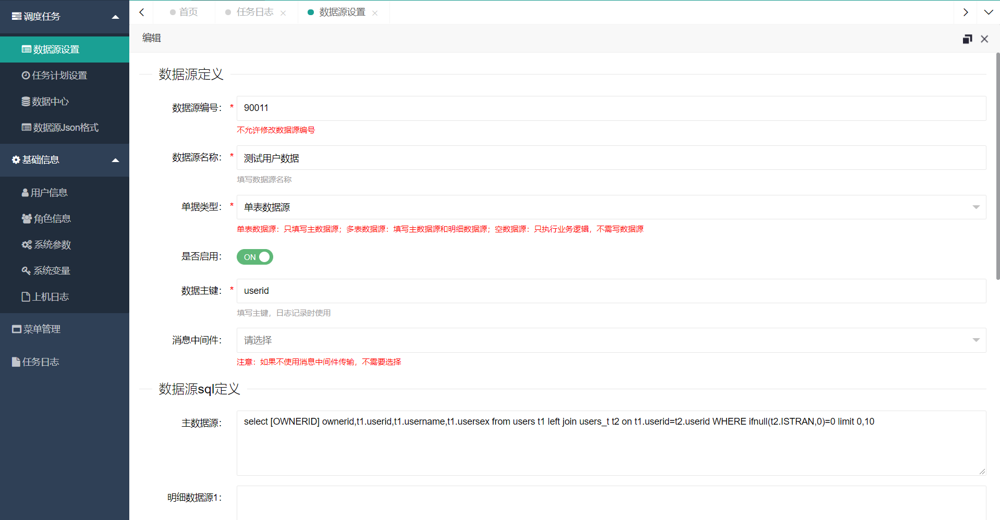
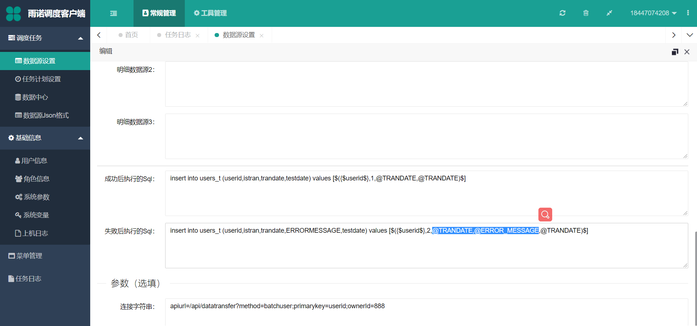
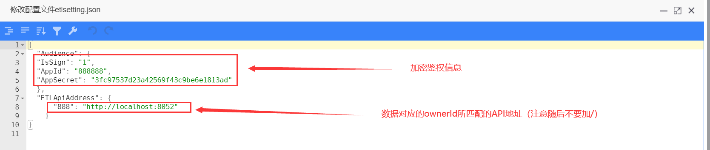
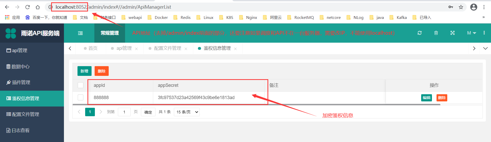

启动前准备（调度平台）¶
数据源设置¶
数据源设置 ，定义SQL，如下图定义取用户数据和回填用户成功或者失败状态的SQL：
 Note
对于一些常量，可以使用 关键字 的形式来替换数据源的SQL语句，如上图主数据源的 [OWNERID]
主数据源：选择 单表数据源 和 多表数据源 时必填，主要用来查询要传输的数据，每次传输数据量使用SQL的条件即可（如：Oracle的rownum、SqlServer的Top、MySql的limit）明细数据源：如传输的数据按照 主子表 的形式传输，该SQL配置的就是查询子表数据的SQL语句，用大括号 {}+$ 符号来配置{$主数据源的列（sql查出来的caption）$}可以自动替换成主数据源中查出来对应字段的数据成功后执行的SQL：该SQL会在数据传输成功后执行失败后执行的SQL：该SQL会在数据传输失败后执行
Note
内置变量：
@TRANDATE ：传输日期
@ERROR_MESSAGE ：失败的错误信息
连接字符串：apiurl=/api/datatransfer?method=batchuser;primarykey=userid;ownerId=888的作用是指定路由/api/datatransfer指得是API中心的路由配置，如下图：batchuser指得是etlapi.json内对应的apiTag，数据到了API中心后根据etlapi.json配置文件对应的apiTag，执行对应apiTag内配置的语句，如下图：useridprimarykey的作用是根据数据在API中心处理的结果，来替换成功和失败语句内配置的数据主键，配置的primarykey必须在成功和失败的SQL语句中配置变量才可以成功的被替换，如上图的{$userid$}因为连接字符串中配置的primarykey也是userid，所以可以成功被替换888ownerId的作用是根据 所有者 的编号来过滤数据，例如：如果主数据源查询出来的ownerId为888，到了API中心去匹配etlapi.json配置的ownerId，一旦匹配不上就不会去寻找apiTag执行其语句，而是直接返回错误。当然我们可以直接设置"ownerId": "all"来允许所有的所有者进入
Note
需要注意的是：
ownreId 至关重要，他是寻找对应API的指南针，只要调度的 ownerId 和 etlapi.json 的 ownerId 一致，才可以找到对应的语句和方法
如果 数据源设置的单据类型选择了单表或者多表类型 ，则根据主数据源中查出来的 ownerId 去匹配 etlapi.json 的 ownerId ，那么，连接字符串中配置的 ownerId 无效；如果 数据源设置的单据类型选择了空数据源类型 ，连接字符串的 ownerId 是有效的（因为 空数据源 不配置SQL语句，我们还可以在 连接字符串 配置 ownerId ，如下图，值得注意的是，该配置只对 空数据源 有效）
数据格式设置¶
打开 数据源JSON格式，选择要配置的数据源，点击一键生成，需要注意的是，我们要选择正确的 数据中心 ，一定要勾选上 是否生成ownerId ，然后覆盖即可，具体设置的各个信息项，详细可以查看 数据源JSON格式
Note
如果最终生成的只有OwnerId，可能是已下两种情况导致的：
选择的数据中心配置有问题
如果确认数据库地址没问题，拿着主数据源或者明细数据源去对应的数据库执行一下，看看语句能不能成功执行，查出列
任务设置设置¶
ETL的任务计划设置和通用调度平台的 任务计划设置 差不多，不一样的只是插件和配置文件的配置（当然ETL无需写插件，只需要利用现有的插件即可实现）
插件的配置：
程序集我们一律设置为RomensCloudETLScheduler.dll配置文件我们一律设置为etlsetting.jsonIJOB实现类：对于任务设置绑定的数据源都是 单表数据源 或者 空数据源 的情况下，我们需要设置
IJOB实现类为RomensCloudETLScheduler.ETLSingleTableJob
对于任务设置绑定的数据源都是 多表数据源 的情况下，我们需要设置
IJOB实现类为RomensCloudETLScheduler.ETLMultiTableJob
配置文件设置：
打开任务计划设置的修改界面，点击修改配置文件
 Note
注意对设置的JSON需要检测一下格式是否正确，可以去 验证JSON